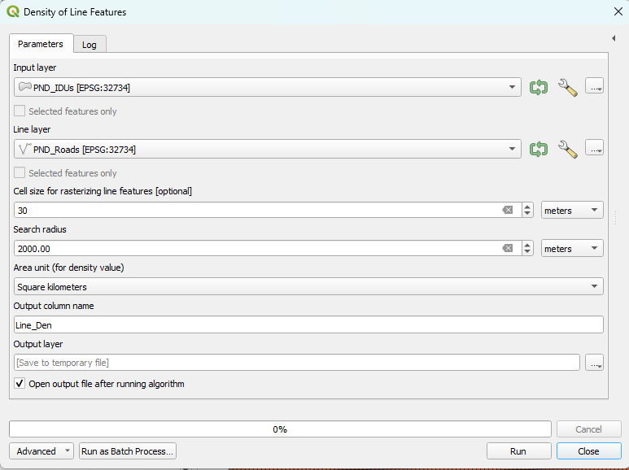

Module 2 - Introduction to OPEN-LUCIS Tools#
What will you learn from this module?
Get to know the OPEN-LUCIS Tools for QGIS,
Learn when and how to use different tools,
Use the tools to answer planning-related questions.
1. Density of Line Features#
Density of Line Features calculates the line density in a polygon (i.e., the total length of line features that fall within a polygon feature divided by the polygon's area). The polygon features (i.e., Input layer) and line features (i.e., Line layer) are two required parameters for using this tool. There are five additional parameters that can be specified, which are outlined here.
1.1 Usage#
This tool is often used to calculate the density of linear features, such as roads and rivers, in a polygon area. Results of this tool can help us understand the magnitude of a certain phenomenon within a territory.
Only the portion of a line within the neighborhood (a polygon feature or a radius around a polygon feature) is considered when calculating the density. If no lines fall within the neighborhood of a particular polygon, a “Null value” will be given to that polygon.
Search radius, if specified, will be used to calculate the line density by using the total length of line features fall within the area of a circle (the centroid of a polygon as the center and the search radius as the radius) divided by the circle's area.
Cell size is used to calculate the total length of line features fall within the area of a circle by rasterizing those line features. The smaller the value, the more precise the outcome, but the longer time will be taken to run the tool.
1.2 Example#
In the following example, we use this tool to calculate the density of road network in the Pandamatenga (PND) landscape. The datasets used are listed below:
ID |
File Name |
Data Format |
Type |
Description |
|---|---|---|---|---|
1 |
PND_IDUs.shp |
vector |
polygon |
Pandamatenga Landscape IDUs1 |
2 |
PND_Roads.shp |
vector |
line |
Pandamatenga Roads |
1: Integrated Decision Unit.
The two figures below display the specific parameter settings and the output of the tool.
📌 Check the details of an image:
If you can’t see the image clearly, click on the image to view it in a new page, which will show the image in its original size.
Parameter Setting |
Output Map |
|---|---|
 |
In the output map, we used Blues Graduated Color to indicate different ranges of the line density (per square meter). Specifically, the darker the blue the higher the density of roads.
2. Distance to Point Features#
Distance to Point Features calculates the distance between an input feature and its nearest point feature in another layer. The polygon features (i.e., Input layer) and point features (i.e., Point layer) are two required parameters for using this tool. There are four additional parameters that can be specified, which are outlined here.
2.1 Usage#
This tool is often used to calculate the distance of the nearest point feature around a vector feature. For example, this tool can be used to find the nearest school or the nearest hospital around each residential area.
In the Distance method, Euclidean Distance and Manhattan Distance are two different methods to measure the distance between an input feature and its nearest point feature.
2.2 Example#
In the following example, we use the tool to calculate the distance between each polygon in the Pandamatenga landscape and its nearest borehole. The datasets used are listed below:
ID |
File Name |
Data Format |
Type |
Description |
|---|---|---|---|---|
1 |
PND_IDUs.shp |
vector |
polygon |
Pandamatenga Landscape IDUs |
2 |
PND_Boreholes.shp |
vector |
point |
Boreholes in the Pandamatenga Farming Area |
The two figures below display the specific parameter settings and the output of the tool.
Parameter Setting |
Output |
|---|---|
3. Reclassify Field#
Reclassify Field reclassifies a field in the input table based on predefined rules and stores the translated values in a new field. The input table (i.e., Input layer), the field to be reclassified (i.e., Field to reclassify), the predefined rules (i.e., Old values and New values), and the new field (i.e., Output column name) are required parameters. There are two additional parameters that can be specified, which are outlined here.
3.1 Usage#
This tool is used to reclassify or change the values of the feature to alternative values.
Old values are the values (or value ranges) you want to reclassify, the New values are the values that will be assigned to the old values. For example, a vector of soil type may be assigned new values of 1 to 10 to represent erosion potential.
No data value is the new value that will be assigned to the no data value. In most cases, the no data value will be 255, so the new value 0 (default setting of No data value) will replace the old value 255 in the field after running the tool.
This tool is useful when you are trying to do a suitability model, it allows you to assign new values to different evaluation indicators under a uniform scoring system (e.g., 1 to 10) on which the final weighting step will be based.
3.2 Example#
Recall that, in Exercise 2 of Module 1, we calculated the population density of Botswana by district in 2022. In the following example, in order to know the population density level of Botswana by district in 2022, we use the Reclassify Field tool to reclassify the population density of Botswana by district in 2022 according to the criteria that old values: 0-1, 1-3.8, 3.8-11.4, 11.4-63.6, 63.6-1386 will be assigned new values: 1, 2, 3, 4, and 5, respectively. The datasets used are listed below:
ID |
File Name |
Data Format |
Type |
Description |
|---|---|---|---|---|
1 |
BWA_ADM_2021.shp |
vector |
polygon |
Districts of Botswana |
The two figures below display the specific parameter settings and the output of the tool.
Parameter Setting |
Output |
|---|---|
4. Spatial Join#
Spatial Join evaluates spatial relationships (i.e., Intersect,
Contains, Within) between features in the Target Layer and the Join Layer.
The tool joins the columns from the Join Layer to the Target Layer if
any two features, one from each layer (we call them “matched” for each other),
satisfy the specified spatial relationship. There are three additional parameters
that can be specified, which are outlined here.
When there are multiple “matched” features in the Join Layer, you can
choose either Join one to many or Join one to one.
If Join one to many is selected, features in the Target Layer
will be duplicated multiple times (as many as the number of “matched”
features) to combine with each “matched” feature in the Join Layer.
On the contrary, if Join one to one is selected, all “matched”
features in the Join Layer will be aggregated, and then combined with
a target feature.
4.1 Usage#
Spatial Join matches rows from the Join Features to the Target Features based on their relative spatial locations. Moreover, this tool is taken a step further in that it not only evaluates spatial relationships but also allows users to specify the column of interest from the Join Layer and then calculate particular statistics, e.g., first, last, sum, mean, median, max, min, std (standard deviation), var (variance), count.
4.2 Example#
In the following example, we choose the Join one to one option to find out the count (number of records) of points of interest (tourism) within each District Administration of Botswana. The datasets used are listed below:
ID |
File Name |
Data Format |
Type |
Description |
|---|---|---|---|---|
1 |
BWA_ADM_2021.shp |
vector |
polygon |
Districts of Botswana |
2 |
PointOfInterestBW.shp |
vector |
point |
Points of interest in Botswana |
The two figures below display the specific parameter settings and the output of the tool.
Parameters setting |
Output |
|---|---|
In the output map, we used Reds Graduated Color to indicate different ranges of the number of points of interest in Botswana. Specifically, the darker the red the higher the number of points of interest.
5. Zonal Statistics#
Zonal Statistics calculates statistics (i.e., mean, median,
sum, minimum, maximum, standard deviation, majority,
minority, unique, range) on values of Raster Layer within the
zones of Input Layer.
There are three additional parameters that can be specified, which are outlined
here.
5.1 Usage#
This tool is often used to calculates statistic on values you are interested from Raster Data within the zones defined by Input Layer.
5.2 Example#
In the following example, we use this tool to sum population based on values of raster dataset within each district of Botswana to show the distribution of population in Botswana.
The datasets used are listed below:
ID |
File Name |
Data Format |
Type |
Description |
|---|---|---|---|---|
1 |
BWA_ADM_2021.shp |
vector |
polygon |
Districts of Botswana |
2 |
BWA_Pop_2020.tif |
raster |
tiff |
Botswana Population 2020 |
Parameters setting |
Output |
|---|---|
|

In the output map, we used Reds Graduated Color to indicate different ranges of the number of population in Botswana. Specifically, the darker the red the higher the number of population.
6. Select by Location#
Select By Location allows you to select features from Input layer based on their location relative (i.e., Intersect, Contains, Within, Within a distance) to features in Selection layer. There are two additional parameters that can be specified, which are outlined here.
6.1 Usage#
This tool is often used to select features spatially relative to the feature you are interested in.
6.2 Example#
In the following example, we use this tool to select all the districts within a 100-kilometer buffer of the railway line in Botswana.
The datasets used are listed below:
ID |
File Name |
Data Format |
Type |
Description |
|---|---|---|---|---|
1 |
BWA_ADM_2021.shp |
vector |
polygon |
Districts of Botswana |
2 |
BWA_Raillines.shp |
vector |
line |
Railway Lines in Botswana |
Parameters setting |
Output |
|---|---|
In the output map, we used Orange color to indicate the served area of railway in Botswana.
7. Exercises and Post-training Survey#
Please complete the Exercise 1.
Please complete the Exercise 2.
Please complete the Exercise 3.
Please submit your exercises here.
8. What's Next?#
Module 3 - Create Suitability Models with QGIS Graphical Modeler.